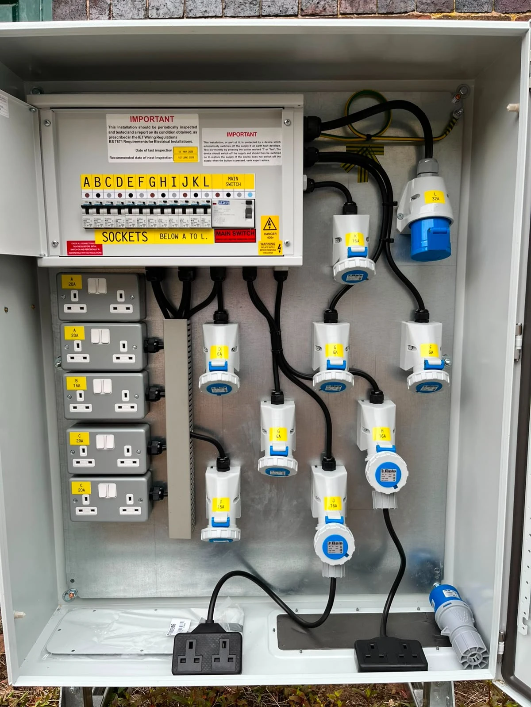

A negotiated access boundary
The agreement aligns DSO capability and user investment under explicit conditions.
Conditional access under constrained network capacity
A connection is more than permission to use the grid; it is an agreement about how scarce capacity, risk, and responsibility are shared.
Flexible or alternative connection agreements offer access under defined operational limitations when fully firm capacity is not immediately available or is not the most efficient solution. The mechanism can accelerate electrification and renewable integration, but only if the access right, curtailment envelope, compensation, control, review, and path to firm access are transparent.
We respectfully invite your expert guidance to make flexible access efficient, voluntary, bankable, non-discriminatory, and operationally credible.
Overview and orientation
A flexibility connection agreement is the access-right branch of the portfolio. It uses the flexibility of a connection applicant or existing user to fit additional demand, generation, or storage within a constrained network envelope.
The agreement aligns DSO capability and user investment under explicit conditions.

Substations and feeders define the physical envelope within which access can be offered.

Metering, protection, control, and communication turn contractual limits into operational capability.
Our proposal
We propose a framework that connects the access envelope, curtailment rule, compensation, operational interface, contract evolution, and market participation rights.
The philosophy is to unlock useful capacity before every constraint is solved by reinforcement, while explicitly allocating the limits and risks that a traditional firm connection leaves with the network. The agreement must remain a genuine choice rather than an opaque transfer of network risk.
When is non-firm access an efficient choice—and when does it become an unfair transfer of network risk?
Why it matters
Poorly designed agreements can expose users to unbankable curtailment, discriminate between connection applicants, weaken local-market liquidity, or postpone necessary reinforcement without accountability.
The opportunity is faster connection, improved use of existing assets, and a structured bridge to future reinforcement. The challenge is to make curtailment predictable and auditable, protect users, preserve project financeability, avoid discrimination, and prevent contracted flexibility from being counted again in local markets.
Who is affected?
DSOs, regulators, connection applicants, generators, demand customers, storage developers, aggregators, financiers, and existing users all have an interest in how access risk is allocated.
Where is it applicable?
The mechanism is most relevant when a useful connection can be offered before full reinforcement, and when the constraint can be monitored, forecast, and managed transparently.
Shared review structure
Each dimension below is a separate review environment. Open a card to read the full explanation and leave focused comments on that exact design dimension.
What capacity right is granted, and under which network conditions?
Open detailed review page →02When may access be restricted, how much, and with what compensation or protection?
Open detailed review page →03How will limits be forecast, communicated, controlled, verified, and made fail-safe?
Open detailed review page →04How will voluntariness, transparency, equal treatment, remedy, and accountability be guaranteed?
Open detailed review page →05How will the agreement change as the network, project, and reinforcement plan evolve?
Open detailed review page →06Can the connected resource participate in markets without double obligation or conflicting control?
Open detailed review page →
Access rights must remain consistent with upstream transmission and distribution constraints.
Network capacity can change over time, requiring predictable control logic and transparent limits.
Operational data and independent oversight are essential for fair implementation.
Feedback environment
Start with the six review dimensions. Each one has a dedicated page with a clear definition, design alternatives, stakeholder implications, evidence requirements, and its own feedback form and discussion box.
Interactive stakeholder challenge
Open each card to expose the unresolved questions that should drive expert feedback.
When does non-firm access create more system value than reinforcement or explicit procurement?
How can alternative access remain voluntary, transparent, and non-discriminatory?
Can developers finance and operate projects under uncertain access?
Does the agreement offer a genuine choice and understandable risk?
Final contribution
Share contract examples, regulatory decisions, operational data, or connection-case evidence.